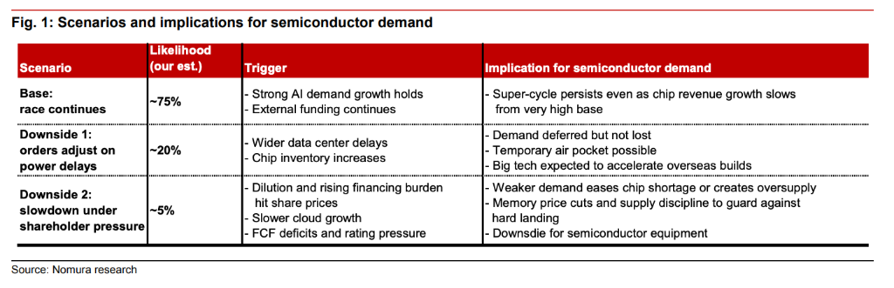

AI军备竞赛难以刹车，2027年存储芯片供需紧张的格局也已基本锁定。 野村全球存储器研究团队在最新报告中指出，科技巨头持续加码AI投资，即使自由现金流承压，也不愿率先退出竞争；与此同时，存储器长期供应协议已提前锁定2027年的供应量与价格，为行业景气度提供支撑。
野村将这场竞争称为“懦夫游戏”（Game of Chicken）：任何一家企业率先削减投资，都可能在下一轮AI竞争中落后。只要竞争对手仍在加码，维持投入就成为更现实的选择，即使代价是持续消耗现金流。
这种竞争格局正在转化为半导体行业的机会。台积电及多家科技巨头均表示，AI需求仍超过现有供给能力；长期协议中的订单锁定与违约条款，也为存储器供应商提供了一定保障。
野村预计，AI投资竞赛持续、半导体超级周期延续的概率约为75%。真正可能打破这一格局的，是融资渠道关闭；电力短缺则可能推迟芯片部署，成为另一项关键风险。
AI军备竞赛难以刹车：没人愿意率先退出
即使AI投资能够带来可观的资本回报率（ROIC），只要投资增速持续超过回报兑现速度，企业就可能长期面临负自由现金流。
科技巨头的表态印证了这一取舍。谷歌CEO桑达尔·皮查伊表示，前沿模型训练的算力优先级高于云业务收入；微软CEO萨提亚·纳德拉称，若将所有新增GPU用于Azure，云业务增速将超过40%；Meta CEO马克·扎克伯格则表示，即使超级智能发展晚于预期，新增算力也可转用于广告和推荐系统。
企业投资的不只是当期收入，更是未来的竞争地位。广告、云服务等成熟业务仍能提供现金流，而竞争对手持续投入，也使任何一家企业都难以率先放缓。只要融资能力尚存，短期现金流压力就未必能迫使科技巨头退出竞赛。
2027年存储器短缺基本锁定：供需双方判断趋同
AI需求持续超过供给能力。台积电CEO魏哲家10月15日表示，AI需求仍超出当前供给；亚马逊CEO安迪·贾西称，即使2026年资本开支升至2200亿美元，公司仍无法满足2026至2027年的全部需求，2028年的部分需求也已提前预订。微软和Alphabet管理层同样表示，云业务正受到产能约束。
野村指出，2027年存储器供应量和价格已于2026年10月通过长期协议（LTA）完成锁定，价格出现反弹。即使客户削减资本开支，合同中的违约条款也会提高取消订单的成本，违约方可能需要支付相当于年度需求价值50%至100%的保证金。
订单提前锁定与违约成本，为存储器供应商提供了较强的需求可见度和一定的利润保护。不过，这一判断主要针对2027年，2028年及以后的供需仍取决于AI投资节奏和后续合同安排。
现金流恶化难阻投资：科技巨头转向外部融资
资本开支已开始超过部分科技巨头的经营现金流。野村报告数据显示，Alphabet 2026年第二季度自由现金流为负59亿美元，Meta第三季度为负21亿美元；亚马逊截至2026年6月的过去12个月自由现金流为负76亿美元。微软同期仍有196亿美元正自由现金流，但野村预计其后续也将承压。
各家企业仍计划维持高额投入：Alphabet预计2026年资本开支为1950亿至2050亿美元，Meta为1350亿至1450亿美元，亚马逊约2200亿美元，微软2027财年约1750亿美元。

融资已成为填补资金缺口的重要手段。报告显示，Alphabet于2026年6月通过普通股和强制可转换优先股融资496亿美元；Meta于第二季度发行249亿美元债券，并暂停股票回购。Meta董事会还批准发行无投票权的C类股，为AI投资提供资金支持。
野村将未来走势划分为三种情景：竞赛持续的概率约75%，资本开支放缓约20%，融资失败约5%。其中，融资渠道关闭才是最可能迫使企业被动收缩、进而打破当前投资格局的风险。 

电力瓶颈可能推迟需求，但未必终结超级周期
除融资风险外，电力供给不足也可能限制AI基础设施扩张。Sightline Climate调查显示，2026年计划新增的数据中心容量中，约30%至50%面临延期风险，超过11GW的容量尚无动工迹象。
如果数据中心无法按期接入电力，已生产的芯片可能无法及时部署，造成交付推迟和阶段性订单波动。不过，野村认为，电力短缺更可能推迟和重塑需求，而非直接消除需求：在供电受限的情况下，新一代芯片和高容量高带宽存储器（HBM）的单瓦性能价值可能进一步提升，旧款GPU也可能面临替换需求。
对投资者而言，核心在于区分需求延迟与需求消失。只要科技巨头仍能持续融资，AI投资竞赛就可能延续，2027年存储器供应端也有望受益于订单提前锁定；真正需要警惕的，是融资条件恶化与电力瓶颈共同导致投资和芯片需求实质性收缩。